天文 |
气象 |
板路 |
折腾 |
老本行 |
本站 |
|
发信人：站长, 信区：折腾→DIY
标 题：用废旧塑料板制作星座绘图板
发信站：板路 (2015年03月09日22时,星期一), 本站
本文于2013年10月04日首发于敝人的从网日志。
作为明信片党，喜欢收发明信片，但是字很丑，不写点东西吧，
片子上空荡荡的不好看，写上寄语什么的.....更难看了... = =
早年间看到了好友胡胡收到一张片子，是英仙座的图案，很好
看。那我就画星座呗....糟糕的是，我画画的技术也很烂.....
于是现在做了这个工具，画出的星座就没问题了。
另外，这些个DIY可以作为天文社团的活动内容吧...经过与港
台社团的交流，得知不单单是天文社团，他们很多社团（包括大中
小学社团）的动手能力很强，经常能做一些跟社团主旨有关或无关
的、有意思的教具、模型、纪念品。而大陆大多数天文社团的活动
说白了就俩：观测、讲座，大城市的加一项：参观。动手制作东西
很少很少，就我知道的，仅有北京理工大学博冠天文社磨过牛反望
远镜，北大青天会的历史长河中也有过磨镜子（或准备磨镜子）的
记载但都是河底淤泥的事儿了。所以本文可以作为社团活动内容的
参考，更希望能起到抛砖引玉的作用，引出更多适合于社团进行的
活动。
其实做法非常简单，去枝去叶地说，就是在平整的透明塑料板
上打出星座图案的孔，用的时候将塑料板盖在明信片上，用笔涂上
孔内纸，连上线。
用具：
2mm左右厚度的平整塑料板
迷你电钻（及切割片+磨头+钻头）
两种颜色的油性记号笔（用白板笔的你就哭去吧）
锥子或小刀
靠谱的纸质星图（你要用电子星图我也不反对....bless）
清水、酒精（浓度75%以上）
能盖住你电脑键盘的纸（非必须，详见文）
交流电插座...【废话
本文中，解说图片的文字位于图片的上方。
塑料板可以用光盘盒、磁带盒、废旧塑料片、软盘盒（只要你
找得到），反正是平整透明的塑料制品就行，用载玻片的自重...
额那啥，用磁带盒做手机架很好用的...
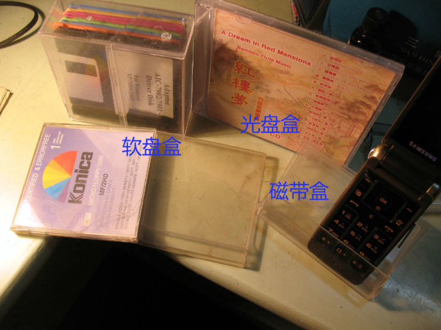
家里曾经有一名英语老师，现已退休，于是他的各种听力磁带
都拿去卖破烂了，好在磁带盒被我抢下来，于是我就用磁带盒来做
嗯。
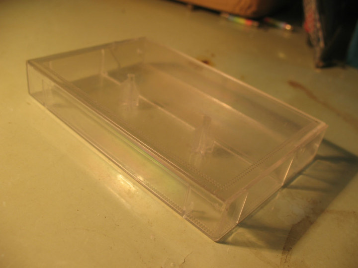
这样拆开，留取左边的部分，右边的想留着就留着没准以后用
得上，不想留着就扔了吧。。。反正我是留着的....攒着下次卖破
烂！ =_______=
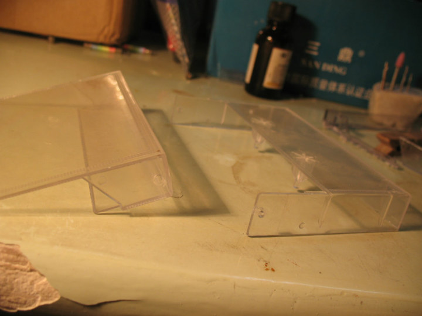
后面的操作会产生大量飞溅碎屑和粉末，如果操作台附近有电
脑等电子或精密物件，最好拿开，实在不能拿开就把键盘等有缝隙
的地方遮住，而且必须戴上口罩、眼镜，不近视的戴上平光镜或护
目镜，总之：不作口鼻和眼睛的保护，绝对禁止进行以下任
何操作！！！虽然不要求戴手套，不过还是建议在不妨碍手部活
动和手感的情况下戴上手套，因为我今天在做这个东西时，有塑料
碎屑刺进大拇指中，费了好大功夫才弄出来。
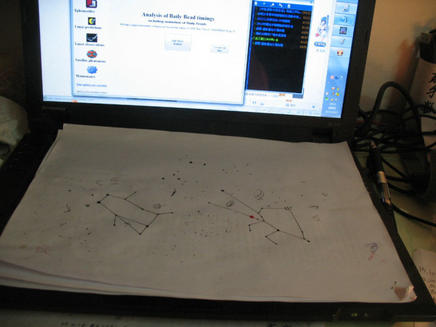
上迷你电钻，用切割片将最大的一侧塑料片切下，然后把附着
在边缘的碎屑抠去，基本都是轻抠就掉。
（电钻网购30元，是包括电钻、夹头、磨头、钻头等工具的，往
往还有一枚砂轮切割片，运送途中很容易碎裂，这时就要自备金属
切割片了，一枚数元，大城市的五金店工具店都应该有，而我跑遍
了我家所在的小县城就是找不到，事后拿谷歌地球量了一下县城还
没有北京大学的本部校区大....购买时最好拿着切割片的转轴去买，
以免买错。）
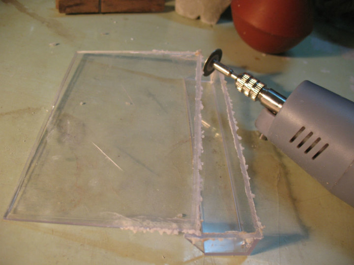
将电钻的切割片连转轴一起取下，用螺帽外的防滑条纹打磨四
个角，使之圆滑不扎手。如果没有这样的条纹，可以用切割片将四
角切掉一些，再用磨头打磨圆滑。将切割片取下是为了防止打磨时
不慎将塑料片划伤。
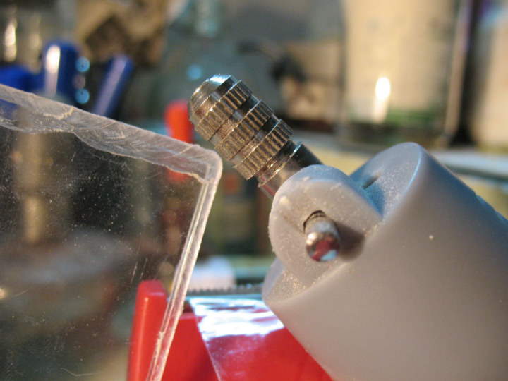
左边是磨角前，右边是磨角后。
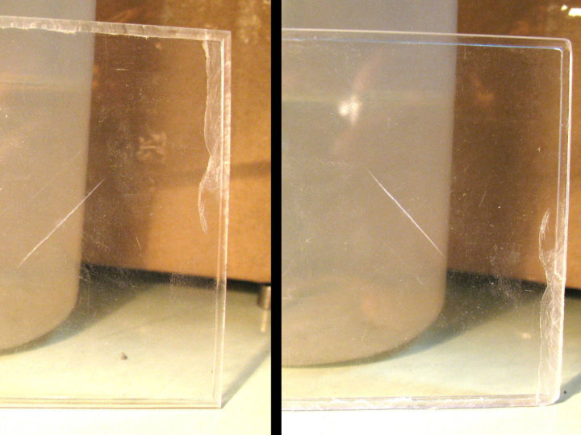
摸一下塑料板的边缘，是否有凸起来的地方，确定最平整、最
光滑、边缘凸起最少的一面为“下”，反之为“上”，用锥子或刀
子“上”面做好标记――学生物的还可以在切割的时候就切掉一个
角，就像你跑SDS-PAGE那样，怎么做标记我不管，反之你别混淆上
下面就行了。
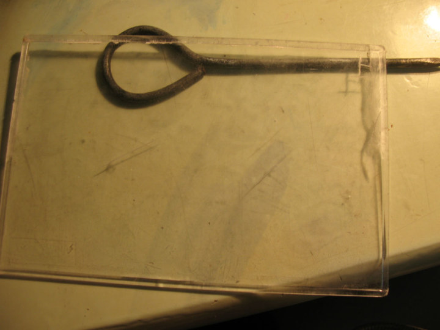
用磨头把边缘都打磨光滑，不扎手就行，最好在打磨后拿细砂
纸擦一下。第一个大步骤就完工了。
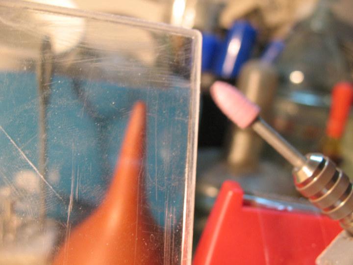
要画标准的星图，靠谱的参考少不了，我做的十余片板子都是
按北京天文馆《新编全天星图》和曹军《食用(误！)全天星图》两
本书的图案来做，《曹军星图》的星座略小一些，适合临摹大星座，
《全天星图》据说有一些bug，不过亮星是没问题的。
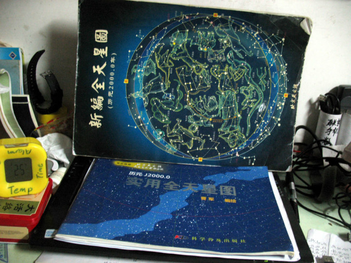
将塑料板放在预选的星座上，如果星座（连线部分）大大超过
了塑料板的面积，那就换一个星座吧。本来我想把黄道星座都做出
来，尼玛室女和蛇夫太大了...放弃.....不过话说回来，星座太大
了，超出了明信片的尺寸....那也没啥用了――【似乎在其他地方
可以用？那再说吧...
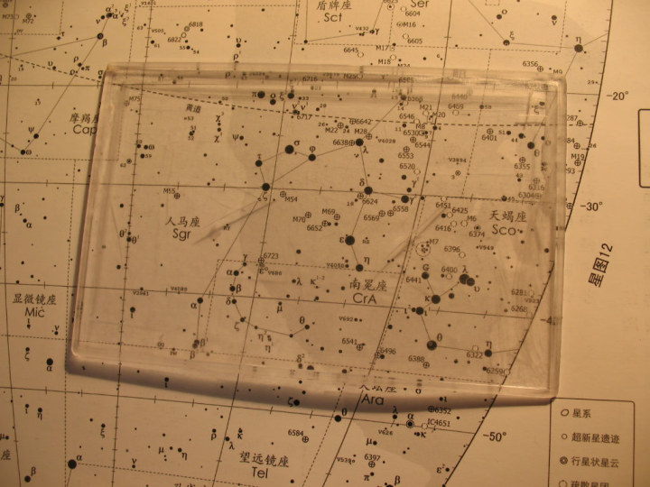
于是这次就选人马呗。其实按照其他版本的连线，上边还有几
颗星来着，如果要连那几颗星，这个板子就不够大了。不过《曹军
星图》上的连线刚好在塑料板的范围内。标记星点的时候，一定要
看清楚“上”面是哪一面哦~
用黑色的油性笔标记临摹星点，2等(含)以上亮星则在星点附
近写上数字，3和4等标记相同大小的点，不写数字，5和6等用蓝色
油性记号笔标记打个小点，不写数字，如果要标记特殊位置，如星
座分界线交点、深空天体、天球特殊点，可用其他颜色油性笔标记，
或用蓝色笔打点后在旁边画叉。
写文字或符号标记时，一定要记得不能搞糊涂标记属于哪个点，
一旦糊涂，马上拿去跟星图比对，否则可能浪费一块板子。重申：
所有标记都应该用油性笔，不能用易擦除的白板笔！否则你就杯具
去吧！
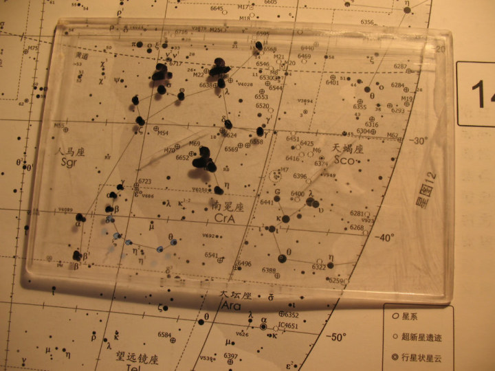
我的这套迷你电钻套装内有5枚钻头，按图上所示的尺寸，去
给塑料板打孔。如果你买到的钻头不是按这个套路来的，可以根据
实际情况，自行确定钻头直径和亮度的对应关系。
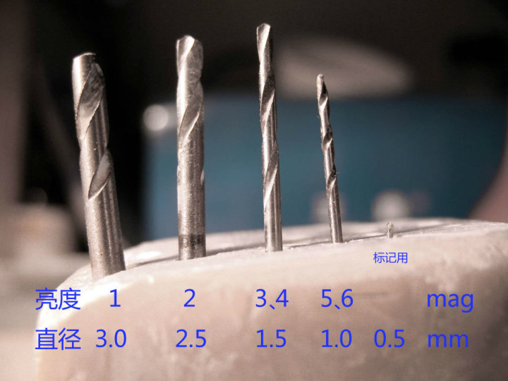
我将打孔的工作台选在桌子的拐角处，这样钻头不会伤到桌面，
塑料板还可以稳稳地控制着。钻孔前，在星点上滴一滴清水，多一
些没关系，别少了就行。
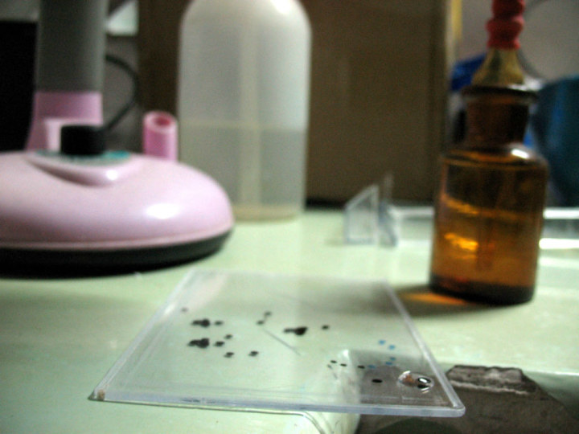
水滴可以将磨出来的塑料碎屑拦住，碎屑不会到处飞，并且可
以帮助钻头降温、润滑。
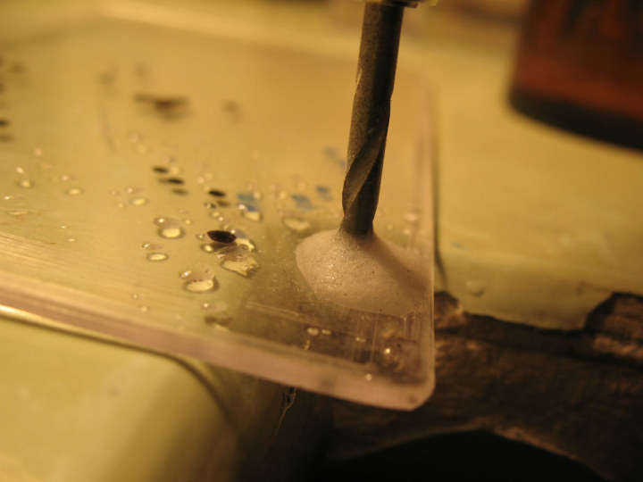
不过即使加了水，还是会偶尔卡住钻头，此事一般发生在快要
钻通的时候，硬拔可能会损坏塑料板和机器，这时只要关机，一手
扶稳电钻机身使之与塑料板的角度不变，一手捏住螺帽上的防滑纹，
按电钻旋转方向的反方向轻轻旋转，钻头即可退出，然后再开机，
轻轻地冲击即将完工的空洞。
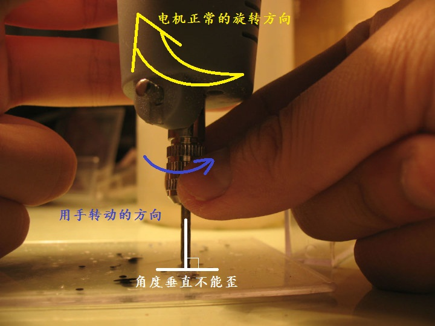
在钻小洞（3-4、5-6等星）结束后，将板子擦干净，板子室温
静置、电钻关机5分钟。由于打孔摩擦生热，孔洞扩张，静置后孔洞
缩小，这时用钻头去戳洞往往会卡在洞口，如果放任不管，画图时
的星点就会不好看，或画不出星点。这时只要开启电钻，用高速旋
转的钻头去戳洞，把洞再打磨、扩张一下即可。
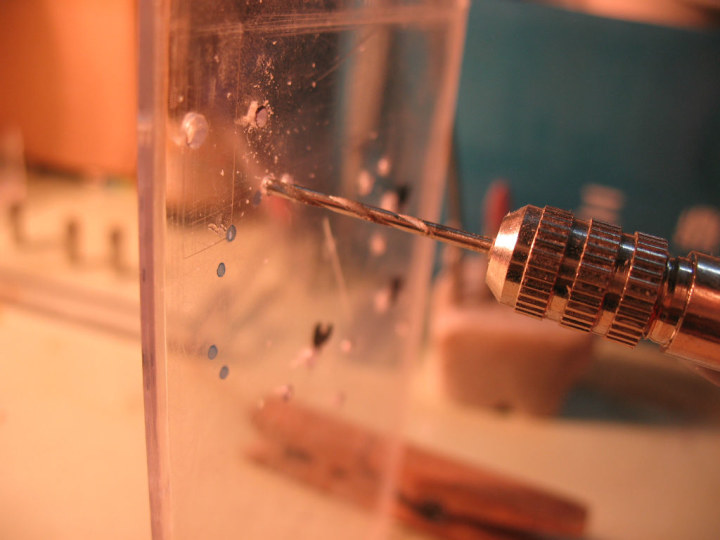
如果钻孔时没有滴水，产生的热量把碎屑熔化粘在钻头上（较
小的钻头加了水还是有可能发生这个问题，那也比不加水好多了），
不利于继续钻洞，通常情况下可以将附着物捋下来（有水更容易捋
下来）。
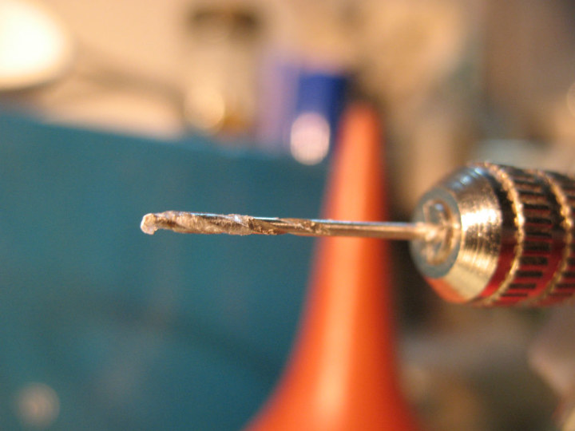
如果捋不下来，抠不下来，就开启电钻，用其他的钻头将高速
旋转的钻头上的附着物刮除。这时的电机应该是运转的... 但是在
一手抓着大钻头时，另一只手相机和电钻不可兼得..于是关机摆拍。
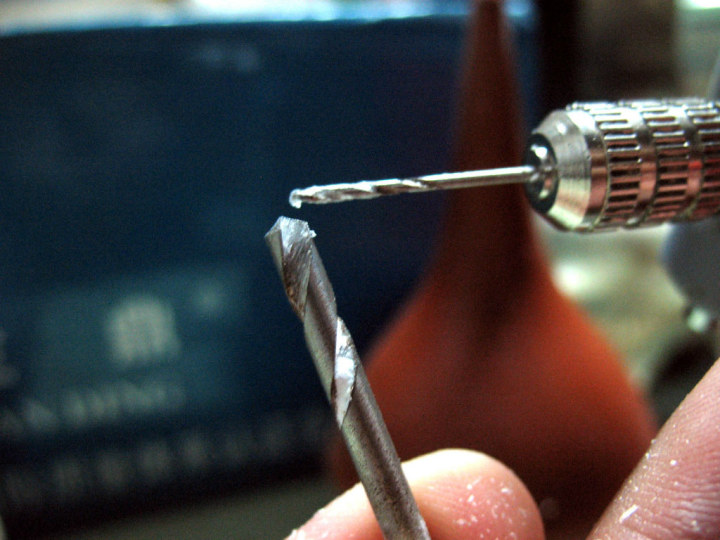
这张图拍的是板子的“下”面，孔洞下面边缘有很多毛刺（其
实上面也有少许毛刺），不利于画图和手持，那就要用比孔洞大一
些的钻头，在高速旋转的时候去磨一下孔洞，将毛刺磨掉，打磨的
时间要非常短，一触碰就要离开，否则小孔就改大孔了。我有一招
很好的磨刺方法，但是很毁电机，所以就不说了。如下图，上面一
排四个孔是没有打磨的，毛刺明显，下面一个孔是打磨之后的，毛
刺很少。
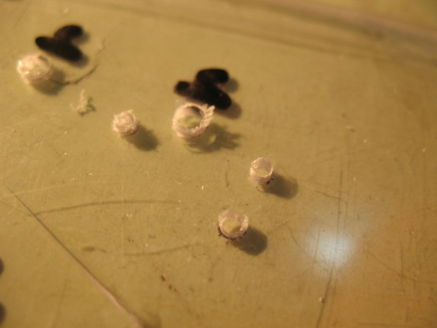
“上”面的孔也要轻轻地磨去毛刺。但有一些特殊情况，如果
最后在明信片上画图的笔的笔尖不是很细很细的那种，一般都是一
个圆锥状的，这样的笔尖将不能通过5-6等星的孔，于是我们需要
用大一些的钻头（我这里用的是2等星即2.5mm的钻头）从板子的
“上”面将小孔上边缘扩大，使笔尖的出墨小珠能抵达纸面，扩孔
时要试着来，磨一下画一下，能刚好在纸上打上墨点儿即可，否则
很容易把5等星变成3等甚至2等星= =.....
以下被扩孔的是...自己对着星图看吧懒得打希腊字母了...
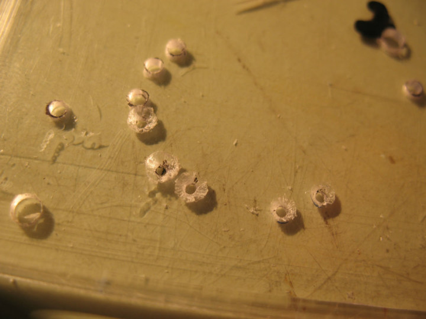
把去完毛刺的板子放回星图上，用尺子和锥子(or小刀)按照星
图连线在塑料板上划出连线，不用划通塑料板！只是供以后画明信
片上的连线时作为参考。
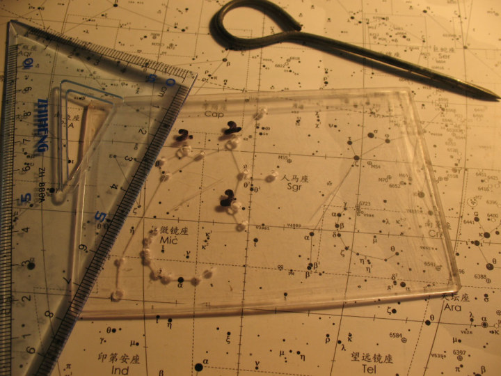
用纸巾沾酒精，擦掉油性笔的字迹。不擦也没大问题。板子就
完工了。

在使用时，板子放在明信片上，一手压住，另一手持笔涂孔，
5-6等星孔只要打上墨点儿就可以了。画完后，不要滑动塑料板，
以免把没有干的墨点擦花，应该用一薄片插入板子和片子之间，
从一边轻轻抬起板子。
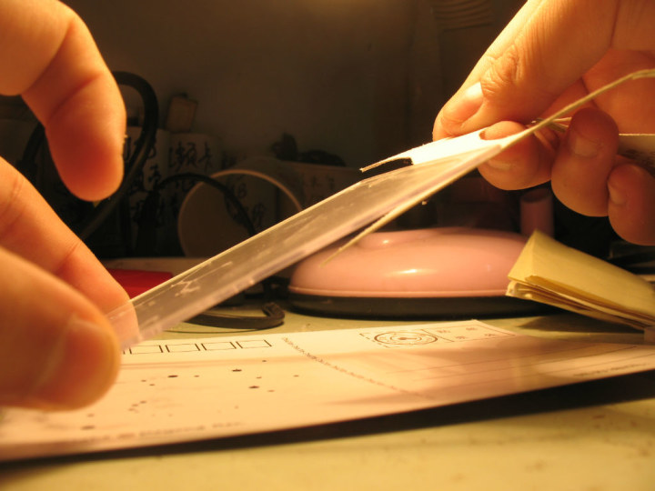
将片子拿去烘干、烤干，别烤糊了......
这盏灯烤糊过一个百香果....果皮果瓤种子都变成碳了.....
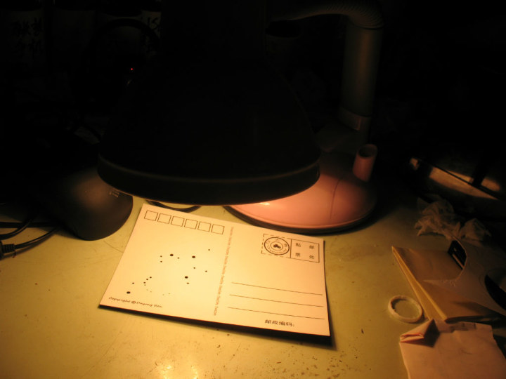
最后一步，按塑料板或星图上的连线，用铅笔（似乎彩色铅笔
更好？）将明信片上的星点相连。如果能写一手漂亮的花体字，可
以把星座的拉丁文所有格或缩写写上......可惜我没有这种技巧
如果所绘星座是双子、英仙、猎户、天龙什么的，还可以画上
流星图样的说......【同样无此技巧
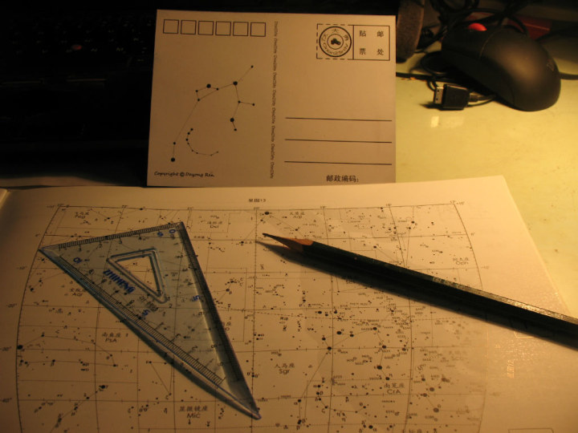
以下就是部分其他星座的板子....如果能有专门的切割机，应
该能切出来很漂亮的边缘吧，不过要找专业机器的话，就少了社团
活动的趣味了...
三角座和仙女座，两个星座的间隔按真实比例绘制。
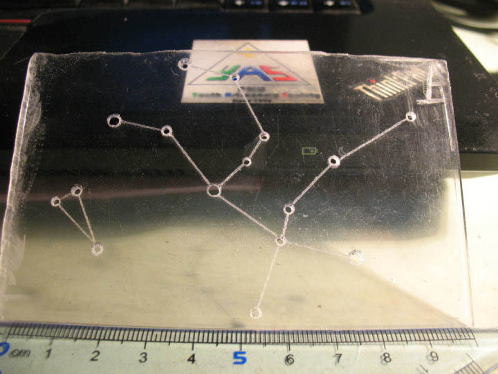
猎户座：
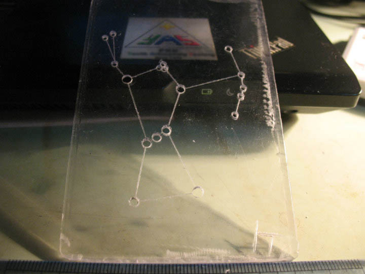
夏季大三角天区，三大亮星都是3.0mm的钻头打的，星座边界的交
点和拐点用的是0.5mm的最小钻头，是否钻通没关系，钻出印子就
行，而且也不需要扩口。关于各星座都是啥...自己查星图去....
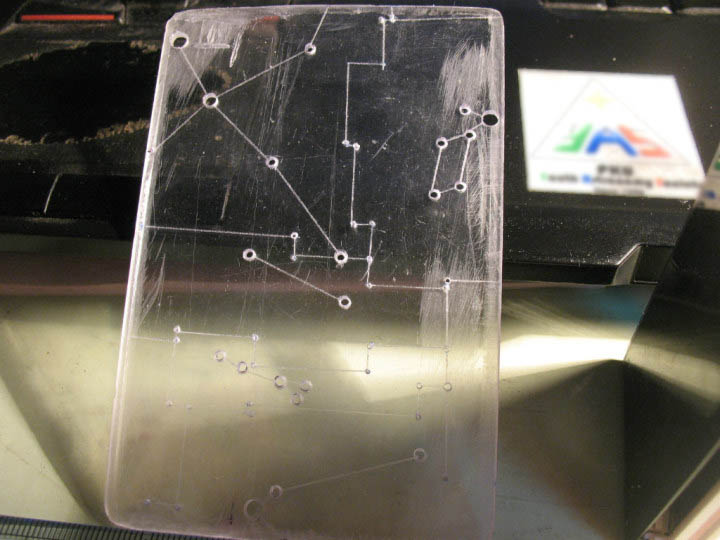
这个算是充分利用空间的典范，在有限的空间内尽可能地放上星座，
左上是巨蟹，左下是摩羯，最右是海豚，右下是小马。
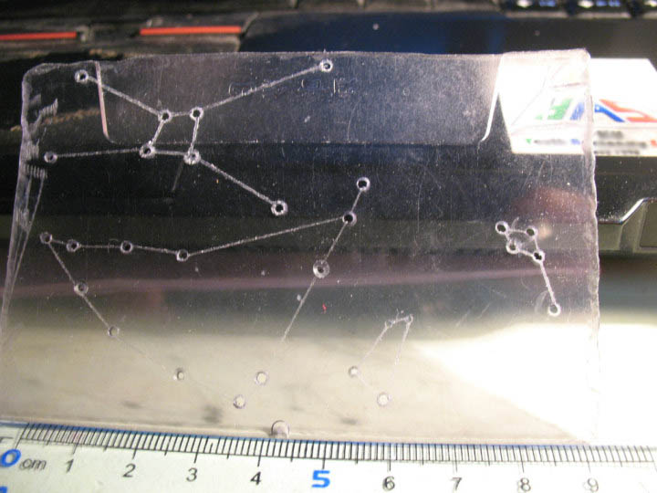
北斗和小熊天区，这个板子是打算拿来在实测时看看能不能直接用
板子将各星点框住，作为一种教具的存在。不过临摹的星图和实际
天空肯定有差别，能不能直接套用我还没试过。北极星旁边的北天
极也可以用0.5mm的最小钻头标出来。
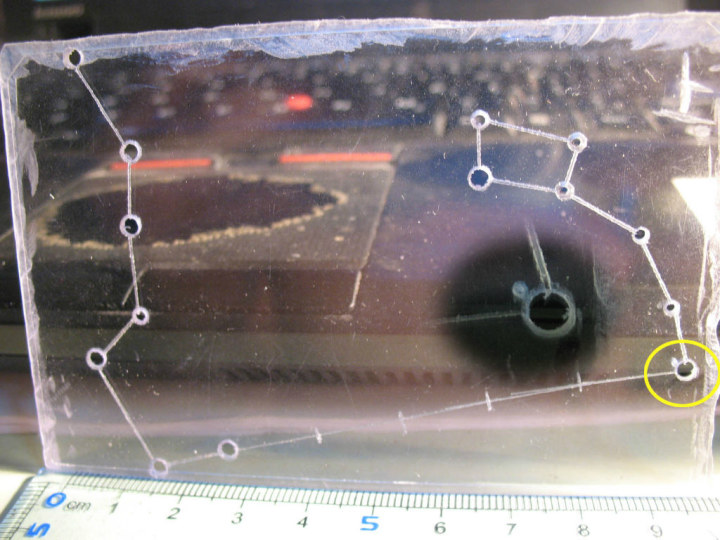